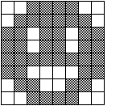
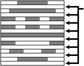
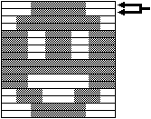
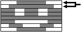

★
HARDWARE Manual★
VDP2ユーザーズマニュアル★
第２章 TV画面
★
HARDWARE Manual★
VDP2ユーザーズマニュアル★
第２章 TV画面
 | 8×8ドットのキャラクタパターン |
| ↓ | |
| ●ノンインタレースモード  |
走査は、毎フィールド同じ場所になるので、走査されない場所ができます。 １フレームは１フィールド(1/60秒)となります。 |
|---|---|
| | |
| ●単密インタレースモード  |
走査は、奇数フィールド、偶数フィールドのどちらも行われますが、同じ絵が表示されますので垂直方向の解像度がノンインタレースモードと同じになります。 １フレームは２フィールド(1/30秒)となります。 |
| | |
| ●倍密インタレースモード  |
走査は、奇数フィールド、偶数フィールドのどちらも行われ、異なった絵が表示されるので垂直方向の解像度はノンインタレースモードの２倍になります。 １フレームは２フィールド(1/30秒)となります。 |
★
HARDWARE Manual★
VDP2ユーザーズマニュアル★
第２章 TV画面